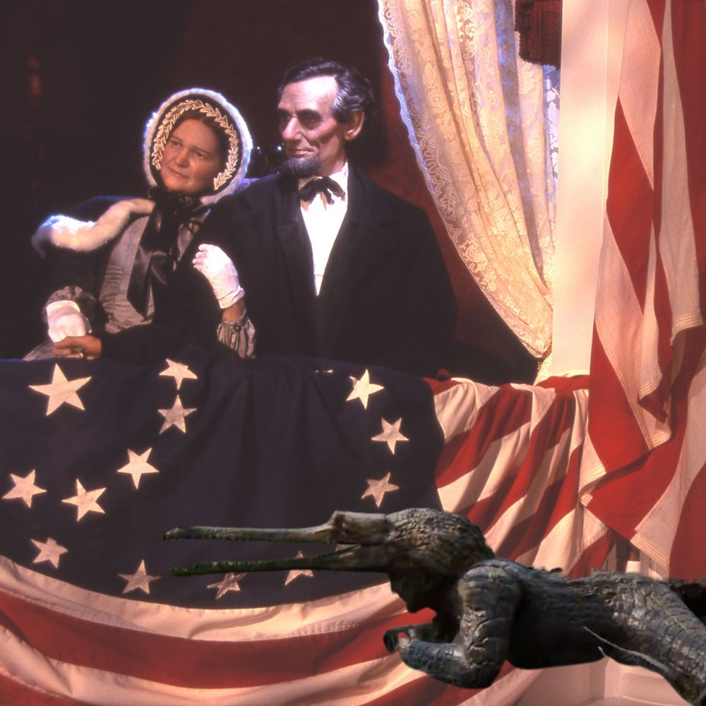
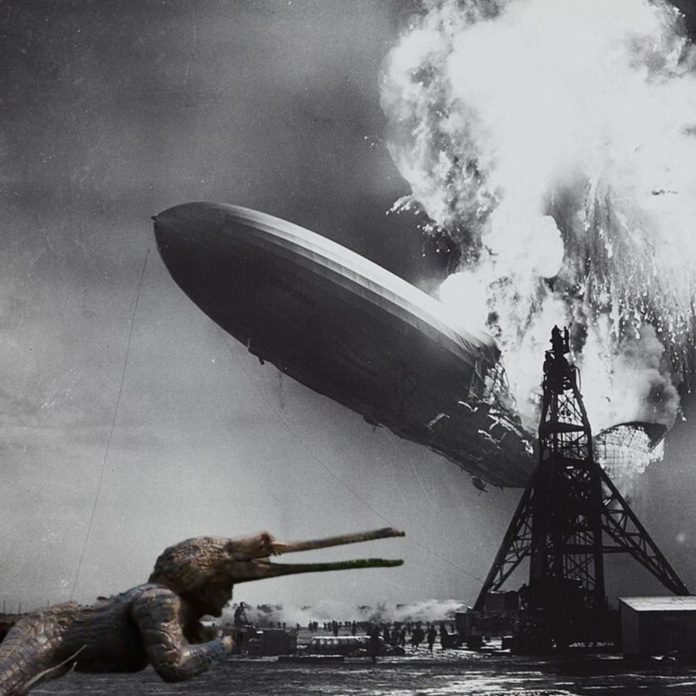
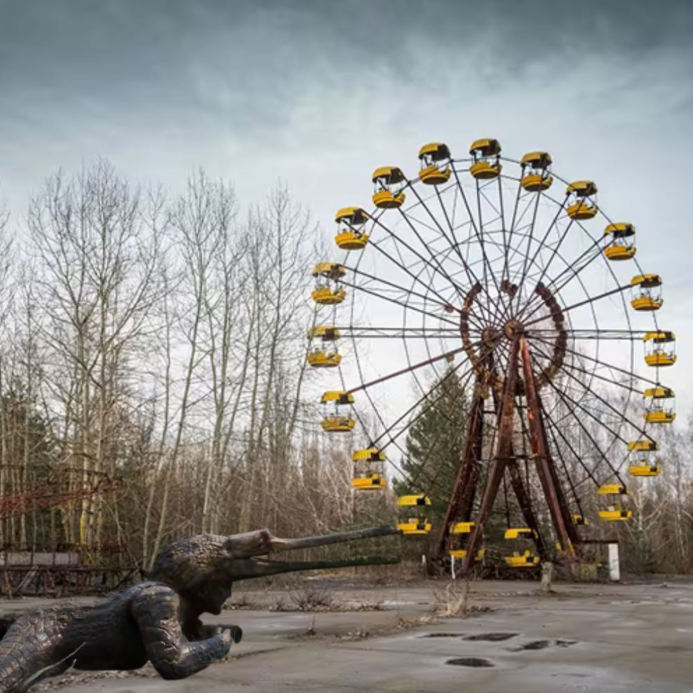
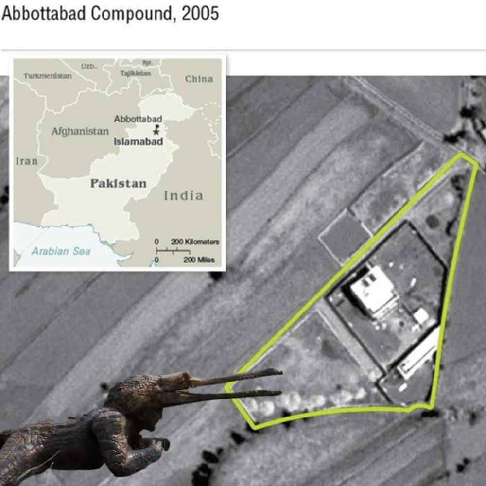

EVIDENCE #001

Lincoln’s Last Night
Ford’s Theatre, 1865
INVESTIGATOR NOTES
Case File #001-LINCOLN
A shadowy reptilian figure spotted near John Wilkes Booth—was the Croc whispering the infamous words “Sic semper tyrannis” or just hissing at the ushers? Stage directions from the night indicate an unexplained tail print on the floorboards. Theatre programs that evening reportedly contained "scaly residue."
Further note: Croc scales found embedded in Mary Todd Lincoln’s fan. Suspicious? The evidence mounts...
Case File #001-LINCOLN
A shadowy reptilian figure spotted near John Wilkes Booth—was the Croc whispering the infamous words “Sic semper tyrannis” or just hissing at the ushers? Stage directions from the night indicate an unexplained tail print on the floorboards. Theatre programs that evening reportedly contained "scaly residue."
Further note: Croc scales found embedded in Mary Todd Lincoln’s fan. Suspicious? The evidence mounts...
EVIDENCE #022

The Hindenburg "Accident"
Lakehurst, 1937
INVESTIGATOR NOTES
Case File #022-HINDENBURG
Witnesses reported a mysterious "snapping sound" moments before the explosion—experts now believe it was the Croc biting through hydrogen lines. Surveillance photos show a croc-shaped silhouette sliding away from the wreckage. “Oh the reptility!” was heard on the radio, but quickly censored.
Further note: Recovered debris included scales, teeth marks, and one suspiciously well-chewed airship rope.
Case File #022-HINDENBURG
Witnesses reported a mysterious "snapping sound" moments before the explosion—experts now believe it was the Croc biting through hydrogen lines. Surveillance photos show a croc-shaped silhouette sliding away from the wreckage. “Oh the reptility!” was heard on the radio, but quickly censored.
Further note: Recovered debris included scales, teeth marks, and one suspiciously well-chewed airship rope.
EVIDENCE #047

Chernobyl’s Secret Ride
Pripyat, 1986
INVESTIGATOR NOTES
Case File #047-CHERNOBYL
Anomalous readings spiked whenever Croc approached the reactor core, possibly attracted by the warm water outflows. Multiple workers claimed to see a “giant croc man” making off with uranium fuel rods, later found gnawed. The Ferris wheel? Just a convenient lookout for Croc's next snack.
Further note: Claw marks found on abandoned hazmat suits. Radiation badge readings: “OFF THE CHARTS.”
Case File #047-CHERNOBYL
Anomalous readings spiked whenever Croc approached the reactor core, possibly attracted by the warm water outflows. Multiple workers claimed to see a “giant croc man” making off with uranium fuel rods, later found gnawed. The Ferris wheel? Just a convenient lookout for Croc's next snack.
Further note: Claw marks found on abandoned hazmat suits. Radiation badge readings: “OFF THE CHARTS.”
EVIDENCE #098

Bin Laden’s Hideout
Abbottabad, 2011
INVESTIGATOR NOTES
Case File #098-ABBOTTABAD
Heat signatures on satellite images showed an unaccounted-for reptilian presence slithering over the compound walls minutes before the raid. Debriefings reference “scaly footprints” and a discarded Croc suit snack wrapper in the courtyard. Some say Croc tipped off the SEALs with encrypted Morse-code tail waves.
Further note: Pakistani police logs record a “swampy” odor at the scene, never explained.
Case File #098-ABBOTTABAD
Heat signatures on satellite images showed an unaccounted-for reptilian presence slithering over the compound walls minutes before the raid. Debriefings reference “scaly footprints” and a discarded Croc suit snack wrapper in the courtyard. Some say Croc tipped off the SEALs with encrypted Morse-code tail waves.
Further note: Pakistani police logs record a “swampy” odor at the scene, never explained.
REDACTED
Analysis:
- 37 sets of footprints
- 12+ witness accounts
- Croc suit seen in 8 CCTV feeds
- Evidence tagged: scales, rope, claw, snack wrapper, “hissing sound” audio
- All files cross-linked with the “JFK
Analysis:
- 37 sets of footprints
- 12+ witness accounts
- Croc suit seen in 8 CCTV feeds
- Evidence tagged: scales, rope, claw, snack wrapper, “hissing sound” audio
- All files cross-linked with the “JFK